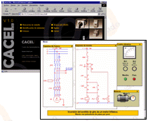

¿Qué es CACEL?
CACEL es un desarrollo WEB para el autoaprendizaje en línea de los circuitos de automatismos cableados con contactores. Está formado por 15 circuitos interactivos que pueden ser simulados en cualquier ordenador que previamente tenga instalado el navegador Microsoft Internet Explorer 5 o superior.
